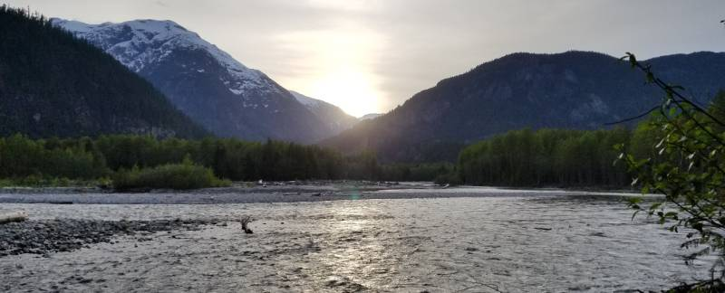

I spent the last 4 years working in operations & training at a fast-paced startup called EcoService. We prepped, launched, and managed car-share fleets for AAA, BCAA, and BMW throughout North America. This was my first exposure to web development with our own properietary app used to track thousands of vehicles & their status, as well as to assign & report tasks.
Having witnessed the impact web development had on our company led me to pursuing web development myself. I enrolled in BrainStation's Full Time Web Development program, graduating in December 2019. With my new found skills I look forward to bringing the same game-changing impact I witnessed, to other small businesses When not behind a computer, you can find me in nature: running the seawall, hiking, camping, or snowboarding. I also love watching movies, the Greenbay Packers, and trying out new beers at local craft breweries.
back